Cuando Arde lo que Fui | Entrega
Hay finales que solo pueden comprenderse con los ojos de un niño.
Me miro a mí mismo… incrédulo. Mi cuerpo está ahí, inmóvil, y verlo desde afuera me hace sentir pequeño, impotente. Como si la vida se hubiera ido sin avisar.
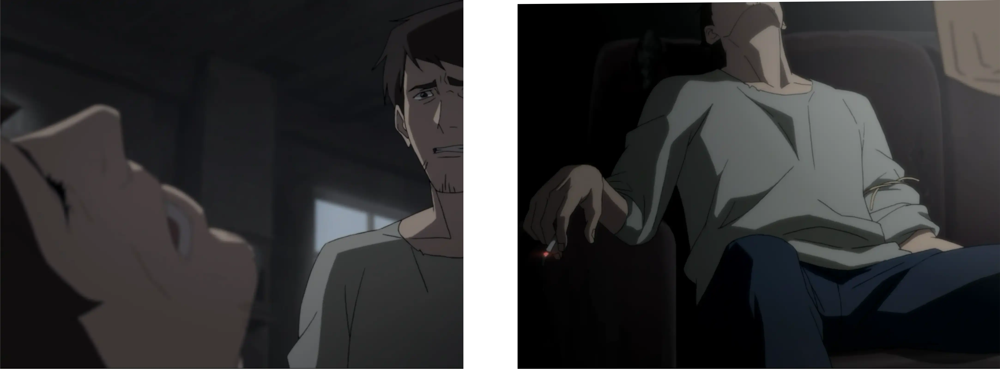Reflexiono sobre lo que hice, sobre lo poco que creí valer. Una tristeza pesada me envuelve; no es nueva, pero hoy se siente más real que nunca.
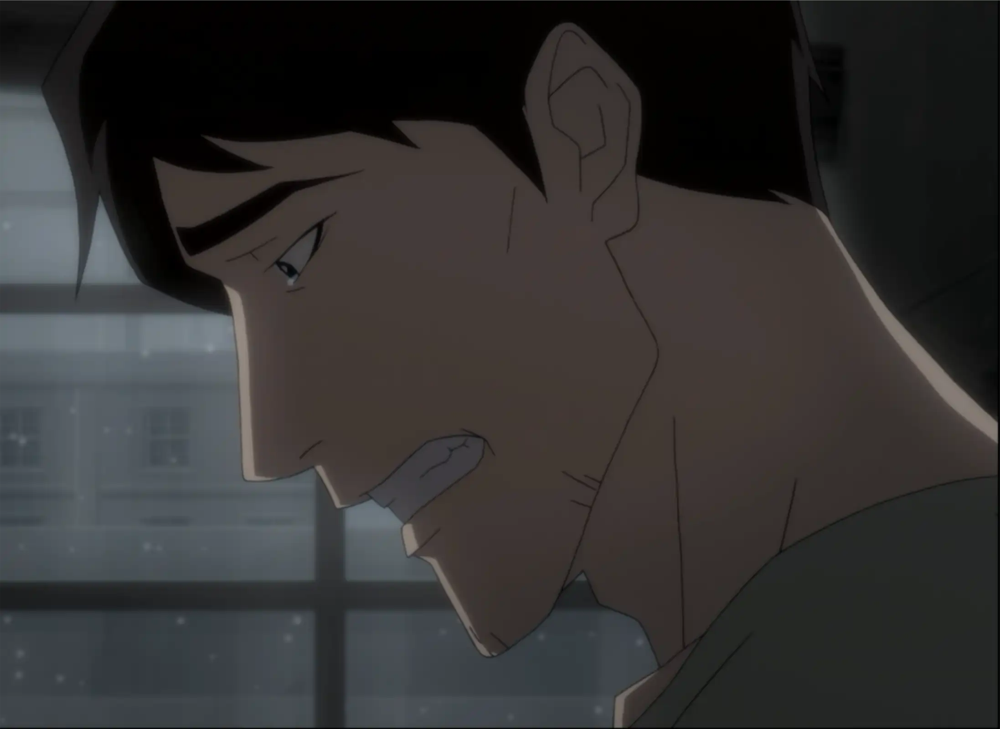Intento encontrar algo a lo cual aferrarme, y lo único que me calma es la pintura que acabo de terminar. Por un segundo, siento que no todo fue en vano.
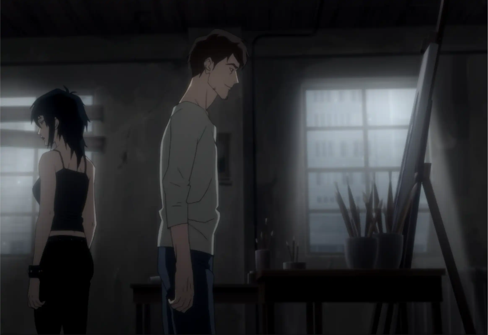Entonces lo escucho. Un sonido leve que corta el silencio: el reloj. Empieza a funcionar de nuevo. El tiempo vuelve a moverse.
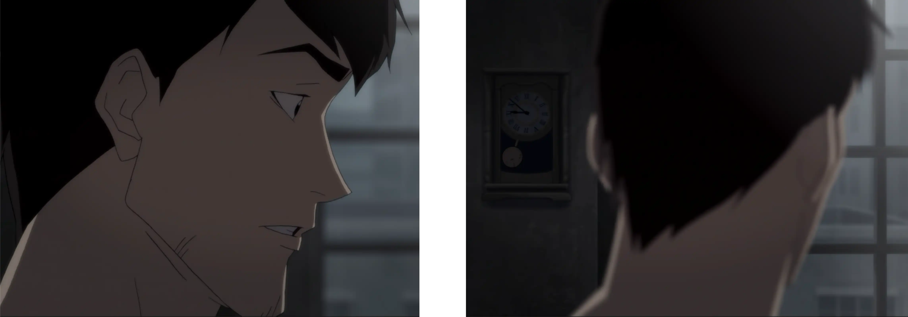La colilla de cigarro que sostenía mi cuerpo cae al piso. Toca unos papeles y, en un instante, una pequeña chispa se convierte en algo más.
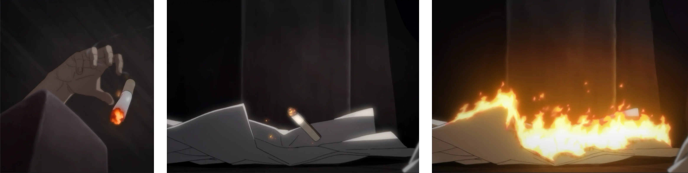Miro horrorizado cómo el fuego se expande. La habitación entera empieza a llenarse de luz y destrucción.
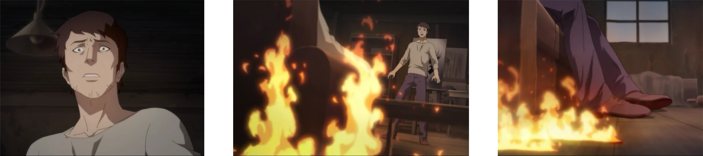Intento proteger el cuadro, pero mis manos no tocan nada. Soy solo una sombra mirando cómo lo pierdo todo.
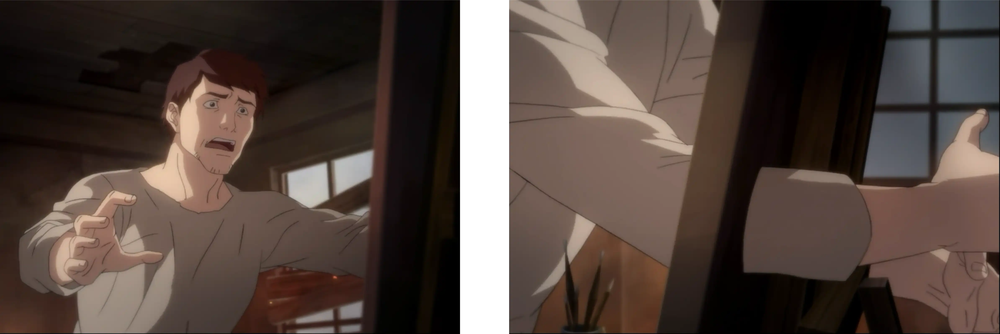La desesperación me quiebra. Grito, culpo a la chica, le pregunto por qué permitió esto. Ella solo me mira… como si supiera que este final siempre me había estado esperando.
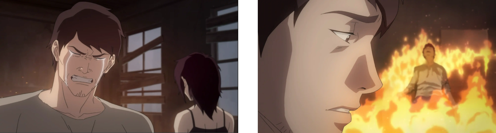Me arrodillo frente a ella, suplicándole que salve la pintura. Y en esa postura, una imagen se cruza en mi mente: yo de niño, pintando un ángel en el piso. La misma posición, la misma necesidad de aferrarme a algo puro.
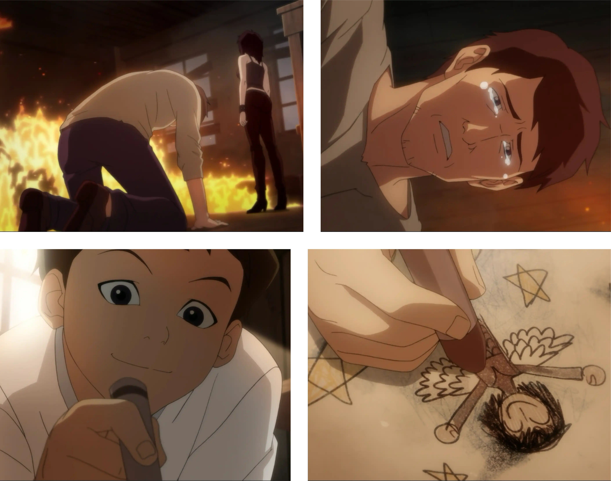Al verme tan feliz en aquel recuerdo, entiendo algo que no había querido ver: ella nunca me abandonaría.
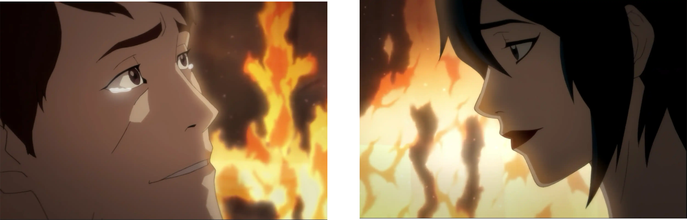Cuando todo esta cubierto de fuego, siento que algo dentro de mí se libera. Mi forma cambia… regreso a ser ese niño que fui alguna vez. La chica se acerca, me toma de la mano y juntos caminamos hacia aquello que no alcanzo a comprender… hacia el misterio.
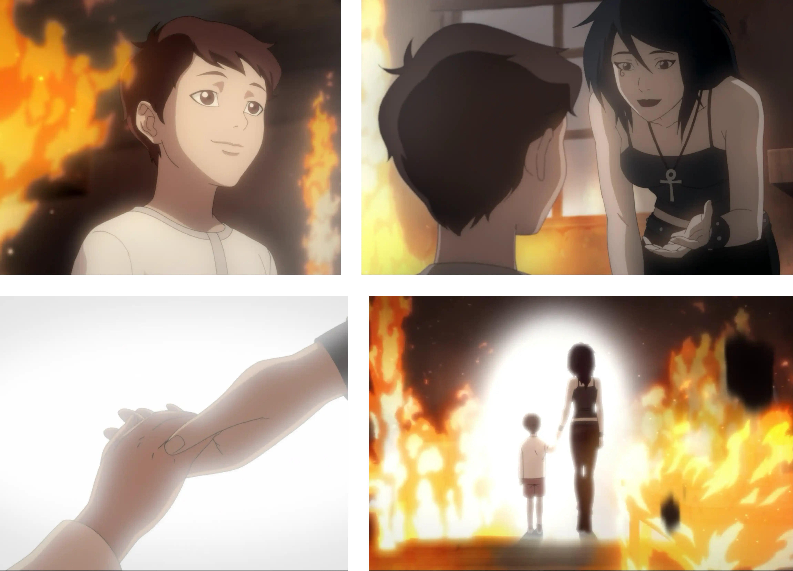